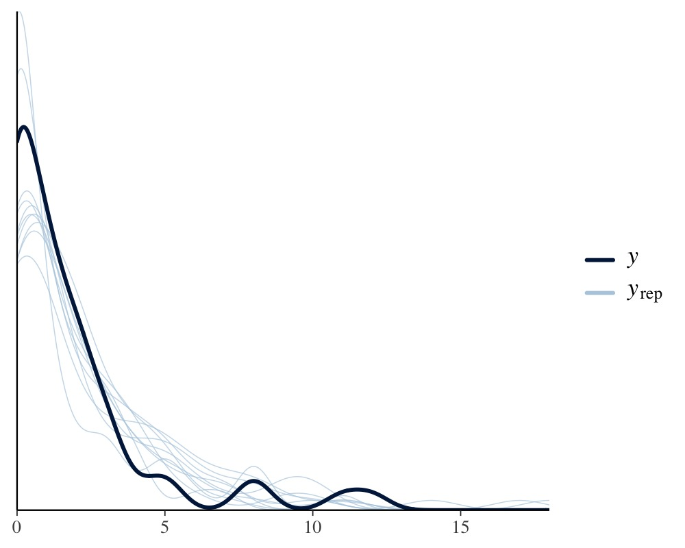

Define Custom Response Distributions with brms
Paul Bürkner
2024-03-19
Source:vignettes/brms_customfamilies.Rmd
brms_customfamilies.RmdIntroduction
The brms package comes with a lot of built-in
response distributions – usually called families in R – to
specify among others linear, count data, survival, response times, or
ordinal models (see help(brmsfamily) for an overview).
Despite supporting over two dozen families, there is still a long list
of distributions, which are not natively supported. The present vignette
will explain how to specify such custom families in
brms. By doing that, users can benefit from the
modeling flexibility and post-processing options of
brms even when using self-defined response
distributions. If you have built a custom family that you want to make
available to other users, you can submit a pull request to this GitHub
repository.
A Case Study
As a case study, we will use the cbpp data of the
lme4 package, which describes the development of the
CBPP disease of cattle in Africa. The data set contains four variables:
period (the time period), herd (a factor
identifying the cattle herd), incidence (number of new
disease cases for a given herd and time period), as well as
size (the herd size at the beginning of a given time
period).
herd incidence size period
1 1 2 14 1
2 1 3 12 2
3 1 4 9 3
4 1 0 5 4
5 2 3 22 1
6 2 1 18 2In a first step, we will be predicting incidence using a
simple binomial model, which will serve as our baseline model. For
observed number of events \(y\)
(incidence in our case) and total number of trials \(T\) (size), the probability
mass function of the binomial distribution is defined as
\[ P(y | T, p) = \binom{T}{y} p^{y} (1 - p)^{N-y} \]
where \(p\) is the event probability. In the classical binomial model, we will directly predict \(p\) on the logit-scale, which means that for each observation \(i\) we compute the success probability \(p_i\) as
\[ p_i = \frac{\exp(\eta_i)}{1 + \exp(\eta_i)} \]
where \(\eta_i\) is the linear
predictor term of observation \(i\)
(see vignette("brms_overview") for more details on linear
predictors in brms). Predicting incidence
by period and a varying intercept of herd is
straight forward in brms:
In the summary output, we see that the incidence probability varies
substantially over herds, but reduces over the course of the time as
indicated by the negative coefficients of period.
summary(fit1) Family: binomial
Links: mu = logit
Formula: incidence | trials(size) ~ period + (1 | herd)
Data: cbpp (Number of observations: 56)
Draws: 4 chains, each with iter = 2000; warmup = 1000; thin = 1;
total post-warmup draws = 4000
Multilevel Hyperparameters:
~herd (Number of levels: 15)
Estimate Est.Error l-95% CI u-95% CI Rhat Bulk_ESS Tail_ESS
sd(Intercept) 0.75 0.22 0.40 1.25 1.00 1493 2129
Regression Coefficients:
Estimate Est.Error l-95% CI u-95% CI Rhat Bulk_ESS Tail_ESS
Intercept -1.41 0.26 -1.92 -0.92 1.00 2055 2495
period2 -1.00 0.32 -1.66 -0.40 1.00 4961 2983
period3 -1.14 0.34 -1.80 -0.48 1.00 4771 3155
period4 -1.61 0.43 -2.52 -0.81 1.00 4546 3143
Draws were sampled using sampling(NUTS). For each parameter, Bulk_ESS
and Tail_ESS are effective sample size measures, and Rhat is the potential
scale reduction factor on split chains (at convergence, Rhat = 1).A drawback of the binomial model is that – after taking into account the linear predictor – its variance is fixed to \(\text{Var}(y_i) = T_i p_i (1 - p_i)\). All variance exceeding this value cannot be not taken into account by the model. There are multiple ways of dealing with this so called overdispersion and the solution described below will serve as an illustrative example of how to define custom families in brms.
The Beta-Binomial Distribution
The beta-binomial model is a generalization of the binomial model with an additional parameter to account for overdispersion. In the beta-binomial model, we do not predict the binomial probability \(p_i\) directly, but assume it to be beta distributed with hyperparameters \(\alpha > 0\) and \(\beta > 0\):
\[ p_i \sim \text{Beta}(\alpha_i, \beta_i) \]
The \(\alpha\) and \(\beta\) parameters are both hard to interpret and generally not recommended for use in regression models. Thus, we will apply a different parameterization with parameters \(\mu \in [0, 1]\) and \(\phi > 0\), which we will call \(\text{Beta2}\):
\[ \text{Beta2}(\mu, \phi) = \text{Beta}(\mu \phi, (1-\mu) \phi) \]
The parameters \(\mu\) and \(\phi\) specify the mean and precision parameter, respectively. By defining
\[ \mu_i = \frac{\exp(\eta_i)}{1 + \exp(\eta_i)} \]
we still predict the expected probability by means of our transformed linear predictor (as in the original binomial model), but account for potential overdispersion via the parameter \(\phi\).
Fitting Custom Family Models
The beta-binomial distribution is natively supported in
brms nowadays, but we will still use it as an example
to define it ourselves via the custom_family function. This
function requires the family’s name, the names of its parameters
(mu and phi in our case), corresponding link
functions (only applied if parameters are predicted), their theoretical
lower and upper bounds (only applied if parameters are not predicted),
information on whether the distribution is discrete or continuous, and
finally, whether additional non-parameter variables need to be passed to
the distribution. For our beta-binomial example, this results in the
following custom family:
beta_binomial2 <- custom_family(
"beta_binomial2", dpars = c("mu", "phi"),
links = c("logit", "log"),
lb = c(0, 0), ub = c(1, NA),
type = "int", vars = "vint1[n]"
)The name vint1 for the variable containing the number of
trials is not chosen arbitrarily as we will see below. Next, we have to
provide the relevant Stan functions if the distribution
is not defined in Stan itself. For the
beta_binomial2 distribution, this is straight forward since
the ordinal beta_binomial distribution is already
implemented.
stan_funs <- "
real beta_binomial2_lpmf(int y, real mu, real phi, int T) {
return beta_binomial_lpmf(y | T, mu * phi, (1 - mu) * phi);
}
int beta_binomial2_rng(real mu, real phi, int T) {
return beta_binomial_rng(T, mu * phi, (1 - mu) * phi);
}
"For the model fitting, we will only need
beta_binomial2_lpmf, but beta_binomial2_rng
will come in handy when it comes to post-processing. We define:
stanvars <- stanvar(scode = stan_funs, block = "functions")To provide information about the number of trials (an integer
variable), we are going to use the addition argument
vint(), which can only be used in custom families.
Similarly, if we needed to include additional vectors of real data, we
would use vreal(). Actually, for this particular example,
we could more elegantly apply the addition argument
trials() instead of vint()as in the basic
binomial model. However, since the present vignette is meant to give a
general overview of the topic, we will go with the more general
method.
We now have all components together to fit our custom beta-binomial model:
fit2 <- brm(
incidence | vint(size) ~ period + (1|herd), data = cbpp,
family = beta_binomial2, stanvars = stanvars
)The summary output reveals that the uncertainty in the coefficients
of period is somewhat larger than in the basic binomial
model, which is the result of including the overdispersion parameter
phi in the model. Apart from that, the results looks pretty
similar.
summary(fit2) Family: beta_binomial2
Links: mu = logit; phi = identity
Formula: incidence | vint(size) ~ period + (1 | herd)
Data: cbpp (Number of observations: 56)
Draws: 4 chains, each with iter = 2000; warmup = 1000; thin = 1;
total post-warmup draws = 4000
Multilevel Hyperparameters:
~herd (Number of levels: 15)
Estimate Est.Error l-95% CI u-95% CI Rhat Bulk_ESS Tail_ESS
sd(Intercept) 0.39 0.26 0.02 0.98 1.01 920 1648
Regression Coefficients:
Estimate Est.Error l-95% CI u-95% CI Rhat Bulk_ESS Tail_ESS
Intercept -1.35 0.27 -1.92 -0.86 1.00 1981 1064
period2 -1.00 0.41 -1.82 -0.22 1.00 4224 2867
period3 -1.26 0.46 -2.20 -0.39 1.00 3553 2429
period4 -1.54 0.54 -2.73 -0.55 1.00 3375 1526
Further Distributional Parameters:
Estimate Est.Error l-95% CI u-95% CI Rhat Bulk_ESS Tail_ESS
phi 17.81 15.93 5.31 62.70 1.00 1303 898
Draws were sampled using sampling(NUTS). For each parameter, Bulk_ESS
and Tail_ESS are effective sample size measures, and Rhat is the potential
scale reduction factor on split chains (at convergence, Rhat = 1).Post-Processing Custom Family Models
Some post-processing methods such as summary or
plot work out of the box for custom family models. However,
there are three particularly important methods, which require additional
input by the user. These are posterior_epred,
posterior_predict and log_lik computing
predicted mean values, predicted response values, and log-likelihood
values, respectively. They are not only relevant for their own sake, but
also provide the basis of many other post-processing methods. For
instance, we may be interested in comparing the fit of the binomial
model with that of the beta-binomial model by means of approximate
leave-one-out cross-validation implemented in method loo,
which in turn requires log_lik to be working.
The log_lik function of a family should be named
log_lik_<family-name> and have the two arguments
i (indicating observations) and prep. You
don’t have to worry too much about how prep is created (if
you are interested, check out the prepare_predictions
function). Instead, all you need to know is that parameters are stored
in slot dpars and data are stored in slot
data. Generally, parameters take on the form of a \(S \times N\) matrix (with \(S =\) number of posterior draws and \(N =\) number of observations) if they are
predicted (as is mu in our example) and a vector of size
\(N\) if the are not predicted (as is
phi).
We could define the complete log-likelihood function in R directly, or we can expose the self-defined Stan functions and apply them. The latter approach is usually more convenient, but the former is more stable and the only option when implementing custom families in other R packages building upon brms. For the purpose of the present vignette, we will go with the latter approach.
expose_functions(fit2, vectorize = TRUE)and define the required log_lik functions with a few
lines of code.
log_lik_beta_binomial2 <- function(i, prep) {
mu <- brms::get_dpar(prep, "mu", i = i)
phi <- brms::get_dpar(prep, "phi", i = i)
trials <- prep$data$vint1[i]
y <- prep$data$Y[i]
beta_binomial2_lpmf(y, mu, phi, trials)
}The get_dpar function will do the necessary
transformations to handle both the case when the distributional
parameters are predicted separately for each row and when they are the
same for the whole fit.
With that being done, all of the post-processing methods requiring
log_lik will work as well. For instance, model comparison
can simply be performed via
loo(fit1, fit2)Output of model 'fit1':
Computed from 4000 by 56 log-likelihood matrix.
Estimate SE
elpd_loo -100.2 10.2
p_loo 22.4 4.4
looic 200.4 20.4
------
MCSE of elpd_loo is NA.
MCSE and ESS estimates assume MCMC draws (r_eff in [0.4, 1.6]).
Pareto k diagnostic values:
Count Pct. Min. ESS
(-Inf, 0.7] (good) 52 92.9% 290
(0.7, 1] (bad) 4 7.1% <NA>
(1, Inf) (very bad) 0 0.0% <NA>
See help('pareto-k-diagnostic') for details.
Output of model 'fit2':
Computed from 4000 by 56 log-likelihood matrix.
Estimate SE
elpd_loo -94.8 8.2
p_loo 10.7 1.9
looic 189.5 16.4
------
MCSE of elpd_loo is NA.
MCSE and ESS estimates assume MCMC draws (r_eff in [0.3, 1.2]).
Pareto k diagnostic values:
Count Pct. Min. ESS
(-Inf, 0.7] (good) 55 98.2% 221
(0.7, 1] (bad) 1 1.8% <NA>
(1, Inf) (very bad) 0 0.0% <NA>
See help('pareto-k-diagnostic') for details.
Model comparisons:
elpd_diff se_diff
fit2 0.0 0.0
fit1 -5.4 4.4 Since larger ELPD values indicate better fit, we see
that the beta-binomial model fits somewhat better, although the
corresponding standard error reveals that the difference is not that
substantial.
Next, we will define the function necessary for the
posterior_predict method:
posterior_predict_beta_binomial2 <- function(i, prep, ...) {
mu <- brms::get_dpar(prep, "mu", i = i)
phi <- brms::get_dpar(prep, "phi", i = i)
trials <- prep$data$vint1[i]
beta_binomial2_rng(mu, phi, trials)
}The posterior_predict function looks pretty similar to
the corresponding log_lik function, except that we are now
creating random draws of the response instead of log-likelihood values.
Again, we are using an exposed Stan function for
convenience. Make sure to add a ... argument to your
posterior_predict function even if you are not using it,
since some families require additional arguments. With
posterior_predict to be working, we can engage for instance
in posterior-predictive checking:
pp_check(fit2)
When defining the posterior_epred function, you have to
keep in mind that it has only a prep argument and should
compute the mean response values for all observations at once. Since the
mean of the beta-binomial distribution is \(\text{E}(y) = \mu T\) definition of the
corresponding posterior_epred function is not too
complicated, but we need to get the dimension of parameters and data in
line.
posterior_epred_beta_binomial2 <- function(prep) {
mu <- brms::get_dpar(prep, "mu")
trials <- prep$data$vint1
trials <- matrix(trials, nrow = nrow(mu), ncol = ncol(mu), byrow = TRUE)
mu * trials
}A post-processing method relying directly on
posterior_epred is conditional_effects, which
allows to visualize effects of predictors.
conditional_effects(fit2, conditions = data.frame(size = 1))
For ease of interpretation we have set size to 1 so that
the y-axis of the above plot indicates probabilities.
Turning a Custom Family into a Native Family
Family functions built natively into brms are safer
to use and more convenient, as they require much less user input. If you
think that your custom family is general enough to be useful to other
users, please feel free to open an issue on GitHub so that
we can discuss all the details. Provided that we agree it makes sense to
implement your family natively in brms, the following steps are required
(foo is a placeholder for the family name):
- In
family-lists.R, add function.family_foowhich should contain basic information about your family (you will find lots of examples for other families there). - In
families.R, add family functionfoowhich should be a simple wrapper around.brmsfamily. - In
stan-likelihood.R, add functionstan_log_lik_foowhich provides the likelihood of the family in Stan language. - If necessary, add self-defined Stan functions in separate files
under
inst/chunks. - Add functions
posterior_predict_foo,posterior_epred_fooandlog_lik_footoposterior_predict.R,posterior_epred.Randlog_lik.R, respectively. - If necessary, add distribution functions to
distributions.R.